01
SHIFT
Dry-powder inhaler
SponsorCSP TechnologiesYear2017
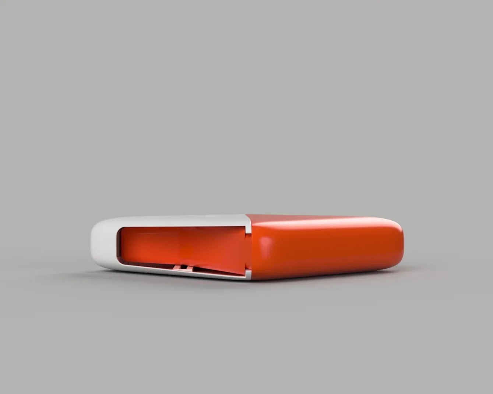
SHIFT is a dry-powder inhaler (DPI) I developed with CSP Technologies. The brief was a single injection-moldable case for the medication: airtight, with a distinctive opening action.
This project taught me how many constraints come with injection-molding plastic products. Rather than letting the production process limit the form, I learned to design with the mold and push what it could do.
Renders
The form.
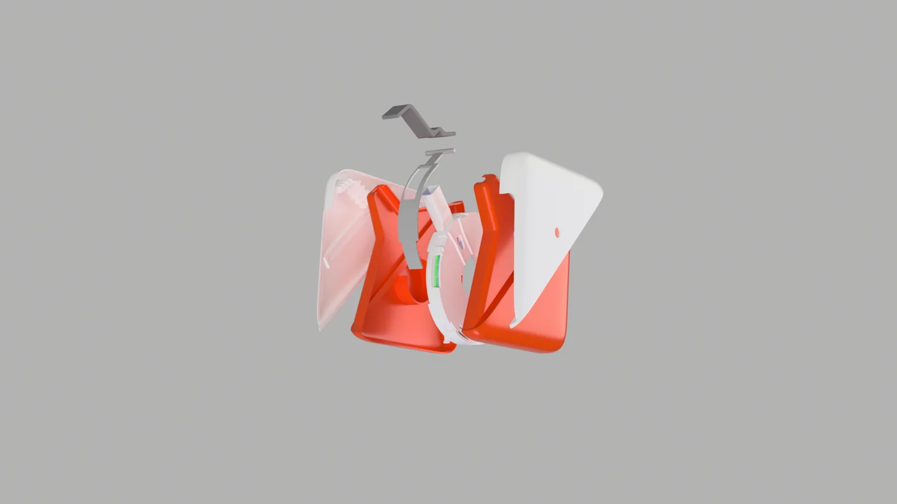
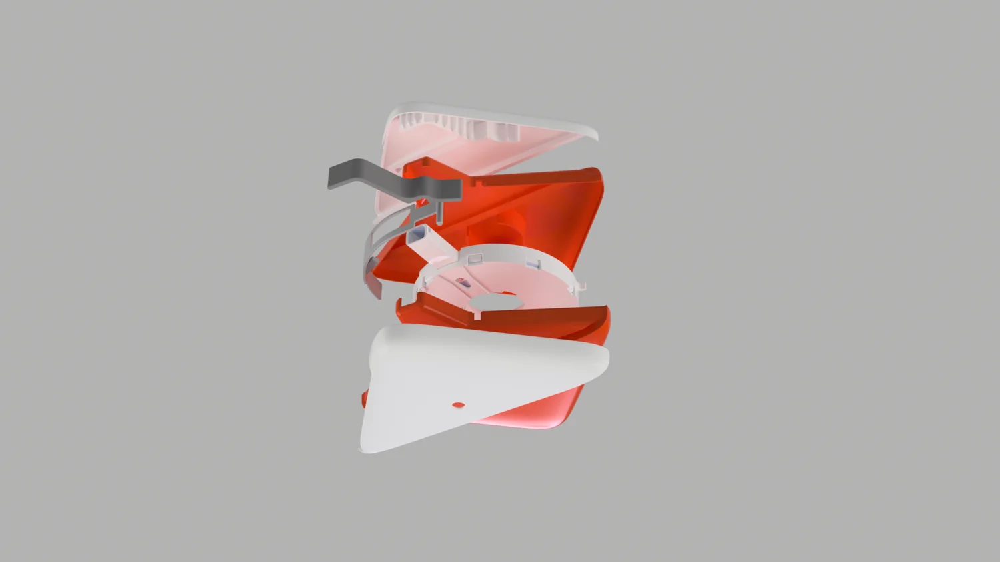
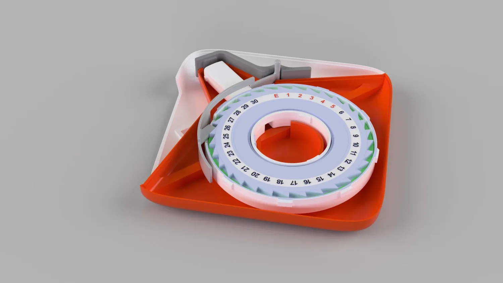
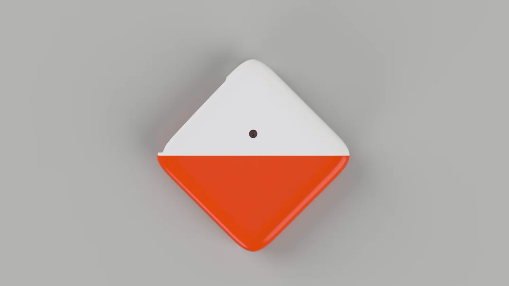
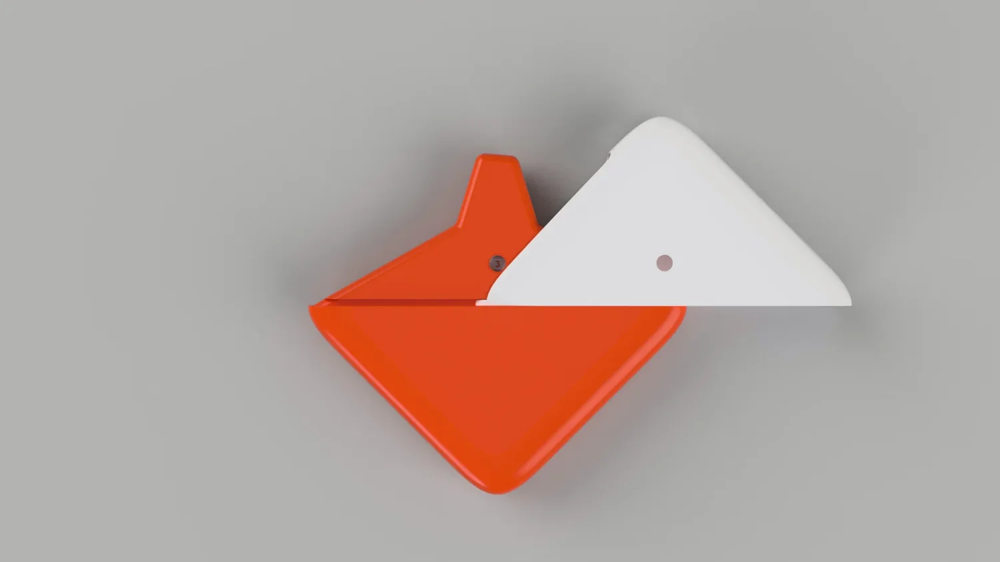
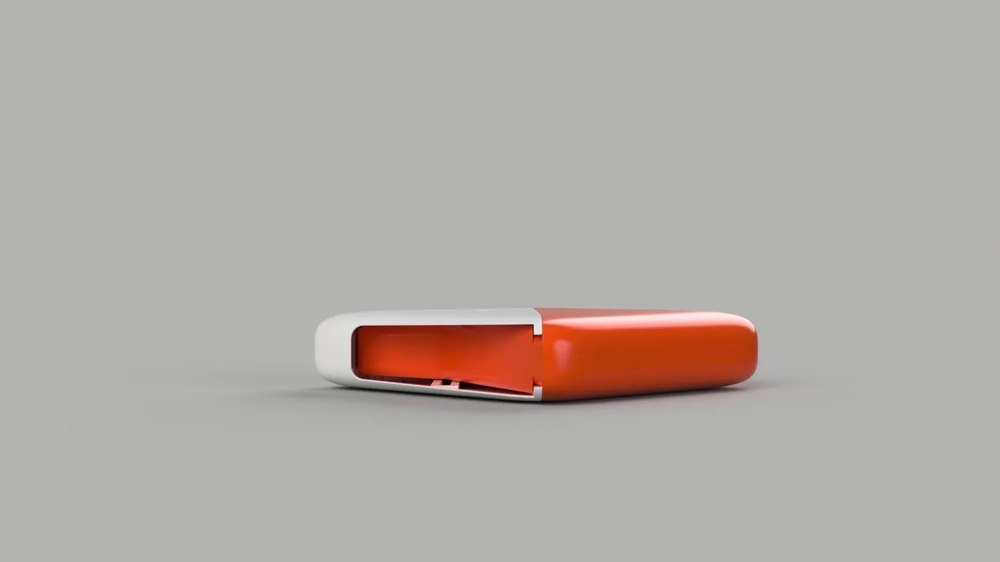
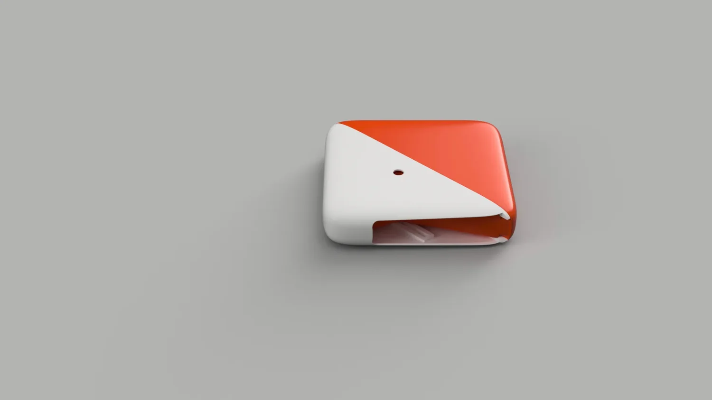
Exploration
Sketches & concepts.
Early sketches and the three named concept directions: SHIFT, FLUX, and ALPHA.
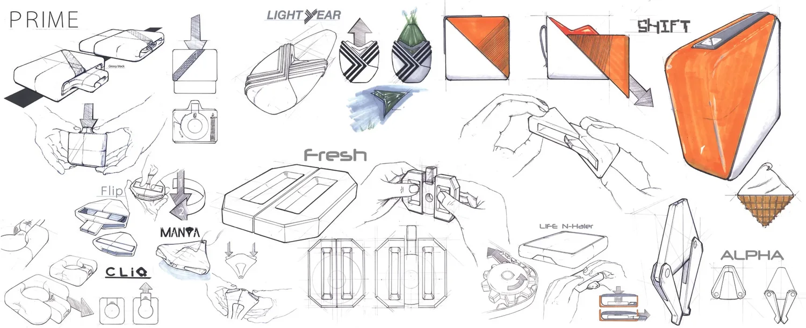
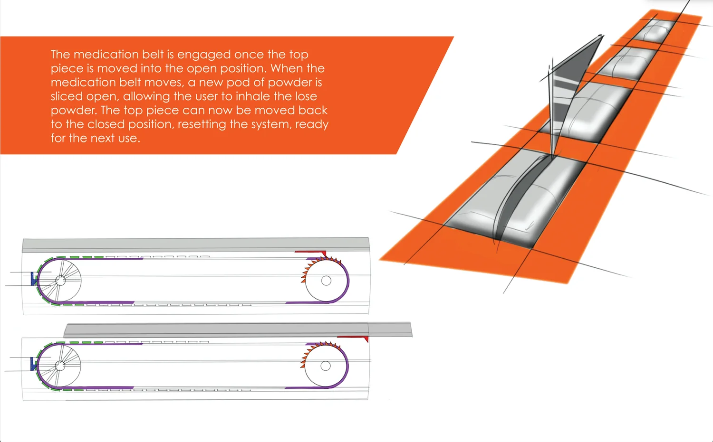
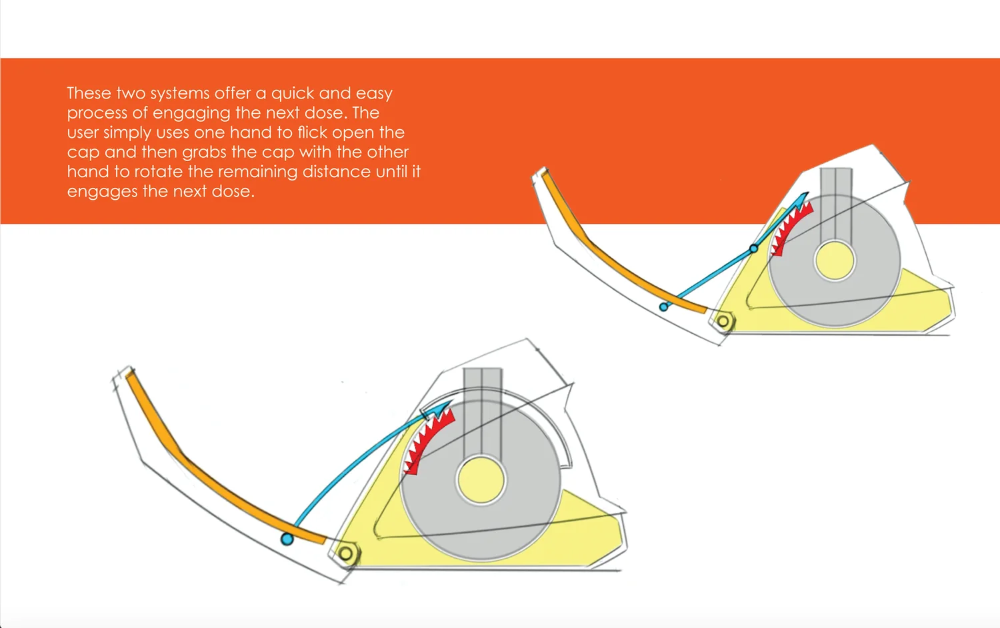
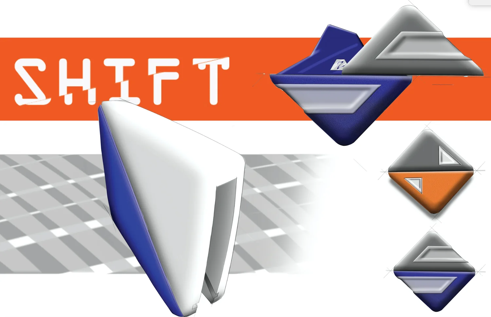
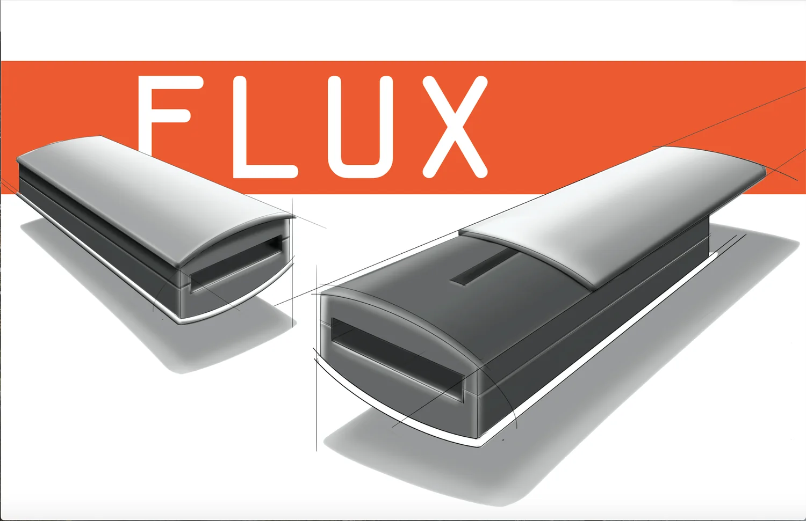
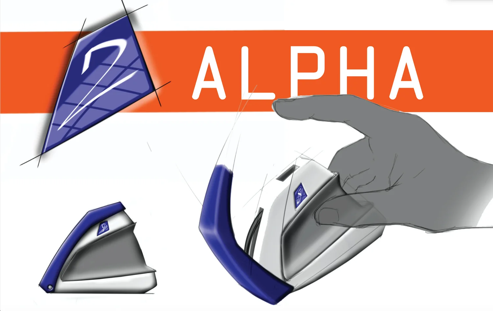
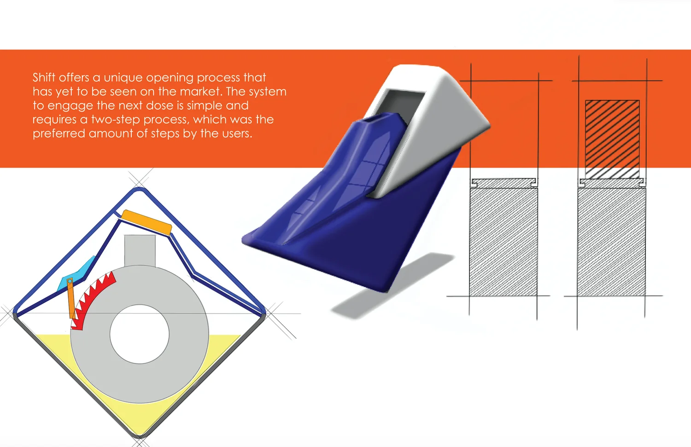
The poster
SHIFT.
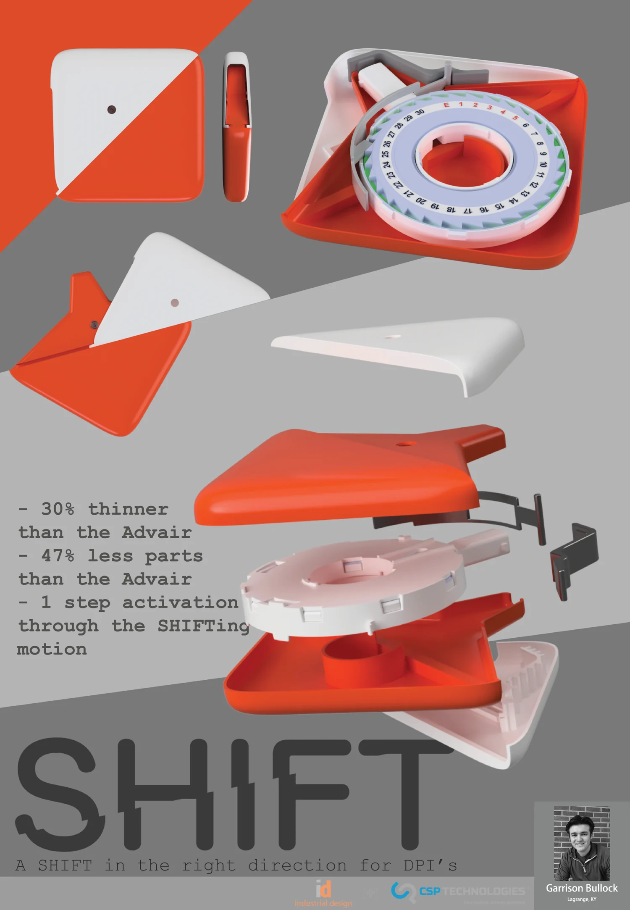
- Role
- Industrial design: research, sketching, CAD, rendering, 3D printing, and user testing.
- Challenge
- An injection-moldable, airtight DPI case with a distinctive opening function.